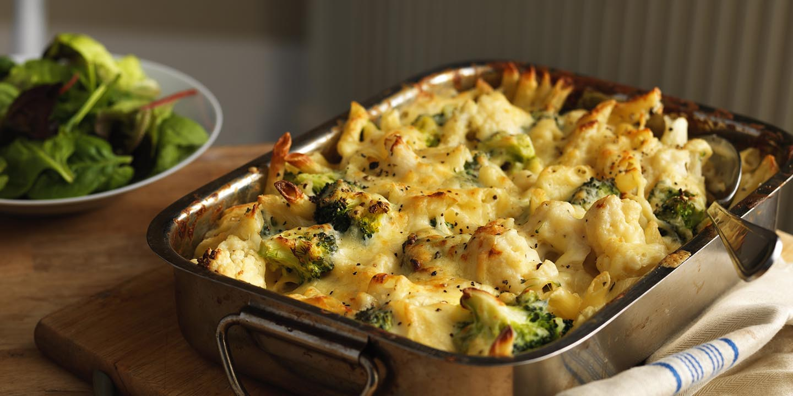

Broccoli Cauliflower Cheese
Home

Description
This broccoli and cauliflower casserole is always a hit! The crushed
croutons on top give it that crunchy dimension that everyone loves.
Ingredients
- Broccoli
- Cauliflower
- Eggs
- Shredded cheddar cheese
- Mayonnaise
- Onion
- Butter
- Seasoned croutons
Instructions
- Preheat the oven to 350 degrees F (175 degrees C).
-
Place broccoli and cauliflower in separate saucepans, cover with water,
and bring to a boil; cook until tender, 3 to 4 minutes. Drain and arrange
in an 11x7-inch baking dish.
-
Beat eggs in a bowl until creamy. Stir in 1/2 cup Cheddar cheese,
mayonnaise, and onion; pour over vegetables. Pour melted butter on top and
sprinkle with remaining 1/2 cup Cheddar cheese. Scatter crushed croutons
evenly on top.
-
Bake in the preheated oven until browned and bubbling, about 40 minutes.